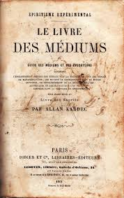

42 livros encontrados

O Livro dos Espíritos
Codificação

O Livro dos Médiuns
Codificação
O Evangelho Segundo o Espiritismo
Codificação

O Céu e o Inferno
Codificação
A Gênese
Codificação
Nosso Lar
Romance
Paulo e Estêvão
Romance
Missionários da Luz
Estudo
Depois da Morte
Filosofia
Messe de Amor
Psicografia